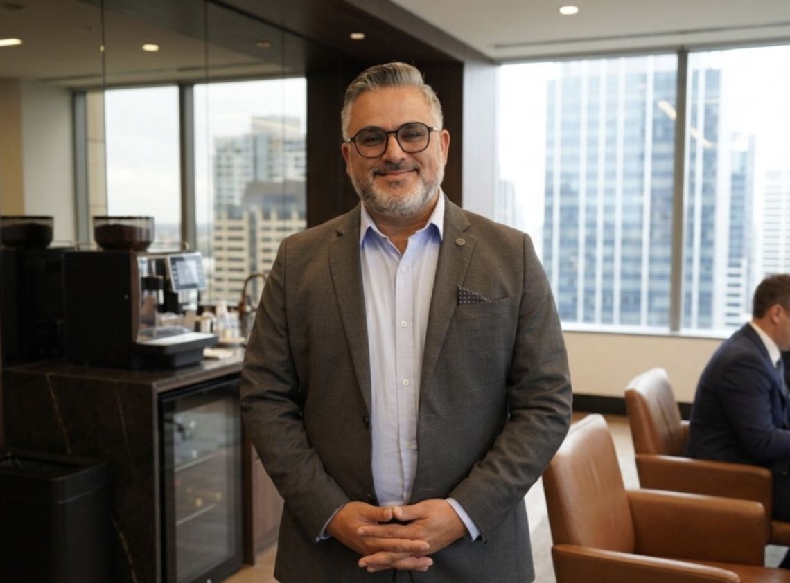

Research areas
Cybersecurity · Internet of Things · Blockchain · AI in Education
Welcome to my portfolio. I am a Senior Lecturer, researcher, and technologist at CQUniversity, Sydney, working at the intersection of cybersecurity, IoT, blockchain, and AI-enhanced education. I was recognised in the 2026 Stanford University–Elsevier World's Top 2% Scientists list. I welcome prospective research students, collaborators, and industry partners. Thank you for visiting.

Mahmoud Elkhodr is a Senior Lecturer in the School of Engineering and Technology at Central Queensland University, Sydney Campus. His research spans cybersecurity, the Internet of Things, blockchain, and the responsible use of artificial intelligence in higher education.
Dr Elkhodr is the architect of the SAGE (Structured AI-Guided Education) framework, developed in collaboration with Professor Ergun Gide. SAGE is a structured approach to integrating generative AI into curriculum design that trains students to critically evaluate, refine, and defend AI-assisted outputs. The framework has received international attention and has informed practice and scholarly engagement across multiple institutions. In 2026, three SAGE resources were recognised by the Tertiary Education Quality and Standards Agency (TEQSA) and listed in its national Generative AI Knowledge Hub as sector-wide good practice.
His technical work has addressed IoT privacy through the IoT Management Platform and semantic obfuscation techniques for privacy-preserving data disclosure. His commentary on the COVIDSafe contact-tracing application was cited by the Chief Scientist of Australia and informed national public discourse on digital privacy.
He holds a PhD, a Master of Science (Honours), and a Master of ICT from Western Sydney University, and a BSc (Honours) from The Open University, UK. He serves the IEEE NSW Section as Nominations Chairman and Education Secretary. He supervises PhD and Master of Research candidates in cybersecurity, IoT, AI, and digital health.